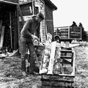
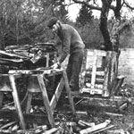
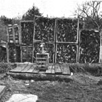
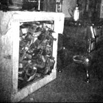

What takes so long about getting in firewood? Cutting? Hauling? No. When you think about it, the tedious part of the job is the stacking and restacking, right?
Let's say you get your fuel directly out of the woods, in the form of logs. That means you've got to [1] load the firewood on a truck, take it home and [2] stack it again in a pile. Then you cut it in stove-length pieces, [3] pile these in a wheelbarrow or other conveyance and transport them to the woodshed where they're [4] stacked yet another time. Finally, you [5] bring the sticks as needed to the woodbox by the stove.
That's five handlings in all! Even if your "stacking" is really more like tossing the chunks in a heap, it still requires moving all that wood bit by bit, one or two lengths per toss. THIS TAKES TIME . . . and the messier the pile, the longer you work to dislodge each unit on the next go-round.
There has to be a less time-consuming way to move firewood from the forest to the stove. After all, the important thing is having that overflowing woodbox in the kitchen where you need it . . . so why not just take the box itself to the woods and fill it on the spot? Then you can transport the whole business straight to the house (forget the intermediate loading and unloading) and-when it's empty-replace it with a full container.
That, in fact, is more or less how I manage the job. I do my cutting and splitting in the woods where the sawdust and chips don't make a mess. Then I load the stove-length pieces-for the first and only time into an empty wooden crate specially made for the purpose. The box sits on the rear end of the truck, and when it's full I move it forward and put a fresh container on behind.
I still keep fuel in the woodshed until I need it, and I still move the wood around as much as ever . . . but instead of handling loose pieces, I work with loaded crates. When my indoor supply runs low, I put a full box on a dolly-which need be nothing more than a piece of plywood equipped with wheels-and trundle the container into a cabinet by the stove.
Granted, it takes a while to build the boxes for this system . . . but it also takes a while to stack and restack loose wood, and I'd rather spend my time on the crates (which are, after all, reusable). Actually, it's only a 20-minute job to put together the largest container I can move without getting a hernia: 27" X 27" X 18". Why those particular measurements? Because my box-building material happens to come in 27-inch pieces, and if I go with that length I don't have to do any sawing (except for the four cornerposts, which are cut to 18 inches since that's the longest stovewood I can use).
The crates are made inexpensively from slabwood ... lumber with bark on one or more sides, available as a waste product from any sawmill. I buy this material-at roughly $10.00 a cord for hardwood-to be used as supplementary fuel. It makes excellent kindling and small pieces for the kitchen range. As I cut the slabs to stove length, I save aside the best and most regular pieces for box construction (especially chunks that are square on three sides and have bark on the fourth).
Working with slabs as I do, I don't worry much about trying to make the boxes perpendicular or exactly the same size. I just square 'em by eye and nail them together. (Nails are my only real expense. . . I use the threaded kind because they're supposed to hold better). The crates don't have to be works of art, since they can't be seen once they're inside the cabinet by the stove. Eventually they wear out and end up in the fire with the other slabwood.
If you give my system a try, you'll find it has several benefits apart from eliminating unnecessary handling of loose pieces. One is that the crates permit you to get more fuel into the woodshed: You can pile it higher (because the boxes stack well) and tighter (because a filled crate can be shaken down and topped up again). Also, if your storage area is one corner of the barn, you don't have to build retaining walls to keep the wood from taking over the rest of the space. And the containers make it easier to separate kindling from big pieces.
Another point in favor of this method is that it stabilizes something that's hard to control in its loose form. You know how a row of firewood tends to lean forward a bit and end up all over the floor . . . or how a wheelbarrow seeks out rocks and potholes so that you spill most of the load? Well, with the sticks wedged tightly in a box, you lose the whole container instead . . . and a single unit is a lot easier to pick up and put back.
That's all there is to the woodbox system, and it sure saves time and energy. Chances are a lot of homestead chores could be organized along the same lines. True simplicity, after all, isn't messy or exhausting . . . and what hope brought us to the boondocks in the first place?
|
 Jody Briggs' laborsaving ""Woodbox System"" Is based on crates which he makes inexpensively from sawmill slabwood. |
 The completed boxes are lightly packed with loose wood ... the first and only time the fuel is handled piece by piece. |
 The filled containers are moped to an outdoor storage area and left there until stovewood is needed in the house. |
|
 Both the crate and the dolly on which it rests are concealed: the swinging door of Jody's stoveside firewood cabinet. |
|
|